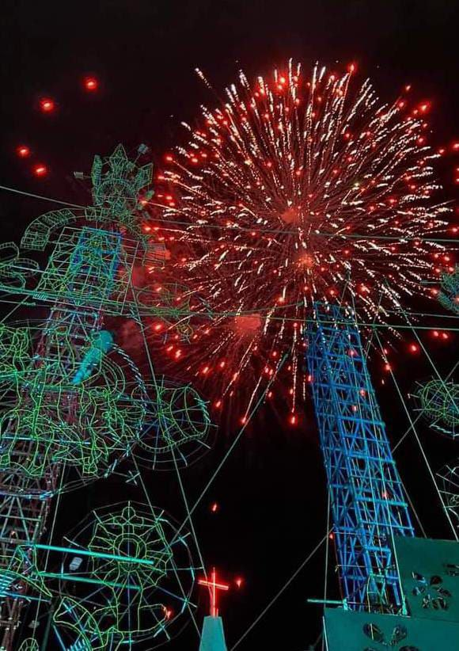

Colegio de Estudios Cientificos y
Tecnologicos del Estado de Querétaro
Plantel No° 83 Ignacio Lopez Rayón
3B TPGA
PAEC Inglés
Getting to know the Sauz Alto


Team members:
Team The Girls
- Arteaga Olvera América Abigail
- Martínez Reséndiz Maria José
- Reséndiz Ramirez Yoselin
- Reyes Eligió Karla
- Sanches Morales Jocelyn
- Valtierra Dominguez Vania